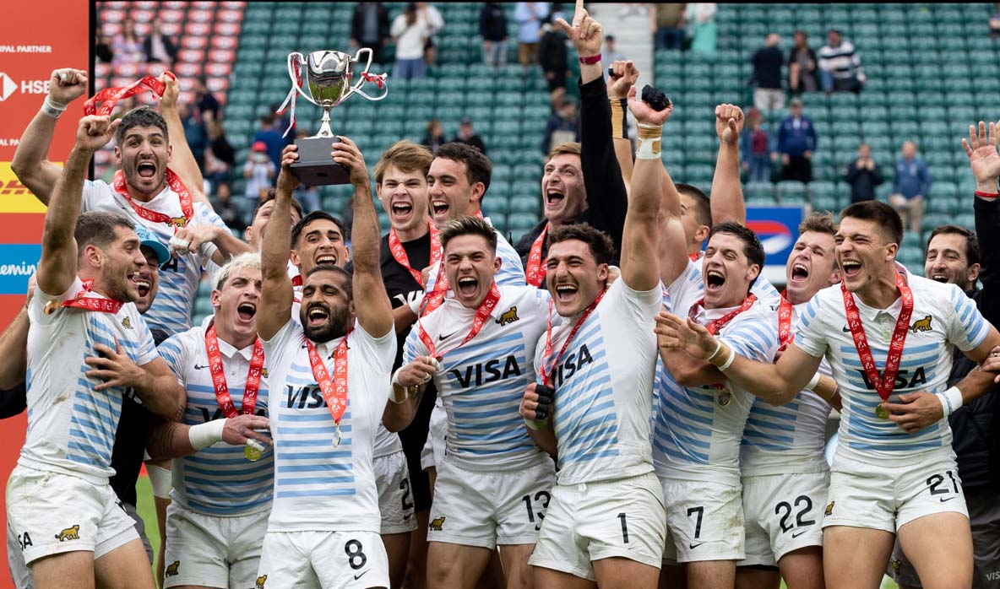

Los Pumas 7’s completaron su mejor campaña de la historia
Cierre de la película para la temporada 2022/23 de Los Pumas 7’s. En el andar durante los once capítulos del circuito, el seleccionado nacional fue dejando distintas marcas históricas, y en la despedida del calendario ese hábito volvió a irrumpir. El equipo nacional se consagró campeón por primera vez en la historia en el Seven de Londres, al superar en la definición a Fiji por 35-14. Esta conquista de la medalla de oro es la tercera en el WRSS y la sexta presea de la temporada, máxima cosecha desde la creación el circuito mundial a fines de 1999. Una campaña memorable, la mejor de todos los tiempos. Además, hay que indicar que los argentinos se midieron en dos oportunidades durante el torneo londinense y en ambos choques les marcaron un total de 75 puntos; incluso, el éxito en la etapa eliminatoria igualó el récord como el éxito más holgado de la historia, con 28 tantos de diferencia. Con esta consagración, el seleccionado argentino terminó en el segundo puesto del ranking mundial, con 179 puntos, y es la mejor ubicación alcanzada en la historia. El campeón de la temporada fue Nueva Zelanda, que en Londres cayó en el encuentro por la medalla de bronce con Samoa por 19-24. Una segunda jornada implacable. La parte decisiva del certamen mostró a Los Pumas 7’s con una consistencia inquebrantable. En el primer turno, argentinos e irlandeses (avanzaron como mejores terceros) se cruzaron nuevamente, en el cotejo por los cuartos de final por el Oro. Tras la victoria del conjunto europeo en fase de grupos, esta vez el seleccionado nacional se tomó revancha y estableció su dominio desde el comienzo, con dos tries consecutivos. Luego, los europeos descontaron para llegar al descanso en desventaja 14-7. El desarrollo durante la segunda mitad fue similar, ya que Argentina logró otras dos conquistas y así la victoria de los dirigidos por Santiago Gómez Cora se concretó sin mayores sobresaltos (28-14).
Para jugar los cuartos de final, Los Pumas 7´s se alistaron con Germán Schulz, Santiago Álvarez Fourcade (capitán), Luciano González, Gastón Revol, Santiago Vera Feld, Rodrigo Isgró y Agustín Fraga; luego ingresaron Alejo Lavayén, Marcos Moneta, Joaquín Pellandini, Matteo Graziano, Tomás Elizalde. Los tries fueron apoyados por Agustín Fraga (2), Matteo Graziano y Germán Schulz, mientras que Santiago Vera Feld acertó tres conversiones y Luciano González, una. Los duelos ante Samoa siempre son difíciles y parejos. Esta semifinal en Londres no fue la excepción. El conjunto oceánico se fue al descanso en ganador (7-5), y parecía que el poderío físico se imponía para llegar a la final. Sin embargo, el segundo tiempo se caracterizó por una paridad notable, tal es así que solamente hubo un try; Santiago Álvarez Fourcade logró la conquista que llevó al seleccionado argentino a su final Nº 21 de la historia al imponerse por un ajustado 10-7. Este resultado impidió que los samoanos lograran la clasificación para los Juegos Olímpicos de París 2024, pasaje que obtuvo Australia. Para el encuentro ante los samoanos, Santiago Gómez Cora dispuso la siguiente formación: Germán Schulz, Santiago Álvarez Fourcade (capitán), Luciano González, Joaquín Pellandini, Santiago Vera Feld, Rodrigo Isgró y Agustín Fraga; después entraron Alejo Lavayén, Marcos Moneta, Tobías Wade, Matteo Graziano, Tomás Elizalde. Los tries argentinos los anotaron Germán Schulz y Santiago Álvarez Fourcade.
La gran final empezó cuesta arriba para Los Pumas 7´s, ya que Fiji golpeó primero con el try de Filipe Sauturaga y la conversión de Waisea Nacuqu (0-7 abajo). Pero el panorama cambió tras la tarjeta roja a Josese Batirerega (tackle peligroso a Luciano González), y con un hombre de más todo fue diferente. El conjunto argentino aprovechó sin vacilaciones del hombre de más, y llegó al intervalo en ventaja por 14-7 (tries de Germán Schulz y Marcos Moneta). En el segundo tiempo, los fijianos sorprendieron con otras conquista de Filipe Sauturaga y la conversión de Nacuqu para igualar 14-14. La fortaleza mental, y el hombre de más, iban a jugar en favor del combinado argentino, que aprovechó los espacios para apoyar tres tries más y así quedarse con la corona por primera vez en la capital inglesa. La Catedral del rugby mundial vibró con la jerarquía de Los Pumas 7’s. Para el encuentro decisivo, la Argentina formó con los siguientes jugadores: Germán Schulz, Santiago Álvarez Fourcade (capitán), Luciano González, Joaquín Pellandini, Rodrigo Isgró y Marcos Moneta; luego ingresaron: Agustín Fraga, Tobías Wade, Tomás Elizalde y Alejo Lavayén. No actuó Matteo Graziano. Los tries los apoyaron Marcos Moneta (2), Rodrigo Isgró (2) y Germán Schulz; las conversiones fueron acertadas por Santiago Vera Feld (4) y Marcos Moneta. Con su try en la final, Marcos Moneta alcanzó el centenar de conquistas en el World Rugby Sevens Series y, con 47 tries, terminó como el segundo máximo anotador de la temporada 2022/23, detrás del samoano Vaa Apelu Maliko, que llegó a los 50 tries. Vale indicar que Moneta debutó en el WRSS en el Seven de Hong Kong 2019 ante Fiji, y también marcó un try en su bautismo.
Tras los festejos en el césped de Twickenham, el head coach Santiago Gómez Cora brindó el siguiente balance de lo sucedido: “Fue un torneo espectacular. En verdad, la competencia fue muy dura, sobre todo porque tuvimos que recuperarnos de lo que fue la final en Toulouse hace una semana. En Toulouse vivimos una montaña rusa de emociones; conseguimos la clasificación para los Juegos Olímpicos 2024, nos aseguramos el segundo puesto en la temporada, jugamos la final… fueron muchas emociones. Y también convivimos con el del dolor de haber perdido con Nueva Zelanda la final cuando estábamos ganando y jugando mejor; creo que fue una final en que más dominamos a los All Blacks, y nos dolió muchísimo la derrota. Pero lejos de conformarnos con todo lo que te mencionaba antes, este equipo fue por más, siempre va por más y es lo que me enorgullece. Estoy orgulloso de verlos dándolo todo. Por todo eso, pudimos cerrar un año mágico, con un título en la Catedral del rugby, también ganándoles dos veces a Fiji y, ¿qué más se puede decir? Las imágenes y el juego hablan mucho más de lo que pueda decir yo. Y con respecto a la serie, terminar segundos creo que ni en los sueños lo pensábamos. El objetivo era poder quedar entre los cuatro mejores para poder acceder directamente a los Juegos de París, y los chicos han sobrepasado esa meta. Así que también fue un año inolvidable; estamos en un sueño del cual no me quiero despertar más. Soy un agradecido a este grupo humano, y de mi equipo de trabajo, porque nunca bajaron los brazos, nunca se rinden. Dejan todo de lado, familia, hogar, amigos, de todo, para darlo todo por esta familia que son Los Pumas 7’s. Es un orgullo y un placer. El mejor año de la historia, lejos”, explicó el entrenador nacional. Después de la actuación en Twickenham, el experimentado Santiago Álvarez Fourcade brindó el siguiente repaso de esta campaña memorable del seleccionado nacional: “El balance desde el torneo en Londres y de la temporada es muy positivo. Cumplimos con nuestros objetivos a nivel resultados, conseguimos la clasificación directa para los Juegos Olímpicos de 2024 y pudimos terminar entre los cuatro primeros del circuito. Eso era lo que nos habíamos propuesto cuando empezamos el año, y haberlo alcanzado nos llena de satisfacción y orgullo; por supuesto que nos costó un montón, pero cada uno hizo el esfuerzo y todos trabajamos duro para lograrlo. “Pero más allá de los números -agregó-, también cumplimos los objetivos a nivel del juego, el hechor de ir creciendo torneo a torneo, mejorar de una etapa a la otra; queríamos ser mejores todo el tiempo, no quedarnos con los logros pasajeros, y obviamente siempre nos quedan cosas por corregir, y siempre estamos pensando en crecer. Repito, el equipo hizo un esfuerzo muy grande para poder transitar ese camino, nada fue fácil, pero nos ayudó el hecho de estar mentalizados y pensando todo el tiempo en el siguiente desafío. Pensábamos y trabajamos día a día, torneo a torneo. Eso es lo más contentos nos deja a todos. Y en el plano personal, estoy por demás agradecido por este año a todos los chicos, porque la verdad me parece que esto que vivimos será inolvidable. De todas maneras, ahora nos toca un descanso, pero ya todos estamos pensando que a fines de junio nos juntamos de nuevo, que tenemos que hacer una nueva pretemporada y que empieza nuestro año olímpico, y tenemos nuevos objetivos, nuevos desafíos y sabemos que tenemos que seguir trabajando duro porque quedan nuevos sueños por cumplir”, expresó el jugador bahiense, que se inició en Sociedad Sportiva y luego jugó en el CASI.